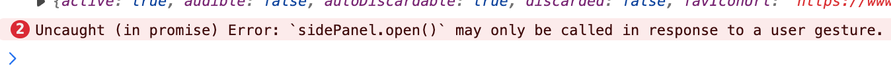

常见问题
为什么有时候目录没有出现或只显示一部分目录？
受困于性能与插件注入的时机，Notion Flow 的目录功能并不能总是 100% 同步更新，此时你需要手动输入一些内容或者鼠标点一点页面，亦或者刷新页面，即可触发目录的更新。
为什么 Edge 切换到其他标签页再切换回来，Notion Flow 的侧边栏就自动关闭了？
这本是一个 Chrome 和 Edge 共同的 bug，但是 Chrome 修复了，Edge 还未修复。目前没有找到解决方案，如果你有解决方案，请告诉我。报错如下：

Uncaught (in promise) Error: `sidePanel.open()` may only be called in response to a user gesture.
见 Bug report:
https://github.com/microsoft/MicrosoftEdge-Extensions/discussions/95#discussioncomment-7818005
和:
https://github.com/microsoft/MicrosoftEdge-Extensions/issues/142
如 bug 中所提及的，Edge 的 Sidepanel 另一个 bug 是无法使用键盘粘贴内容。
发布功能需要这么多的 Token，安全吗？
Notion Flow 保证不会收集任何用户隐私，所有的 Token 都是保存在用户本地，不会上传到任何服务器。你可以通过查看 devtools 的 Network 面板来确认这一点。
将来考虑收费吗？
因为这个功能过于小众，因此短期内收费也赚不到钱，还不如免费给大家用，图一乐，如果本插件对你有帮助，为了更好的发展，请考虑 赞赏。
而且添加收费功能就要用到服务器，我不想搞这么麻烦，平常我自己用这个插件也就是前端用]，搞服务器就背离原来的初衷了，可以，但没必要。
为什么闭源？
为了防止开源后被部分人打包二次售卖。
去哪儿提需求/Bug？
Github 上有 Discussion 讨论和 Issue 进行 Bug 反馈。
另外，Notion Flow 有自己的功能路线规划，如果想要定制，请考虑 赞赏。